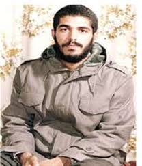
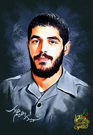

بسم الله الرحمن الرحیم
زندگی نامه
یکم اردیبهشت ماه سال 1336 در تهران متولد شده است. نامش را زیاد شنیده بودم و حالا زمان آن رسیده بود که این شهید را بیشتر بشناسم. 37 سال از شهادت شهید «ابراهیم هادی» می گذرد؛ پهلوان بی مزار و فرمانده گردان کمیل از لشکر محمد رسول الله (ص) که آرزوی گمنامی داشت و اگر امروز در این دیار نفس می کشید، شصت و یکمین سالروز ولادتش را جشن می گرفت.
در گفت و گو با خواهر شهید ابراهیم هادی، از ابتدا جذب عشق بی انتهای یک خواهر به برادر شهیدش شدم که حتی پس از گذشت 37 سال او را با لحنی، «ابراهیم» خطاب می کند که گویی حضور شهید در زندگی اش جریان دارد و هر لحظه اش با یاد و توسل به پاکی برادر شهیدش گره خورده است. حس غرور به داشتن برادری چون ابراهیم در صدایش موج می زند؛ مگر می شود خواهر شهید باشی آن هم از جنس پهلوان «ابراهیم» و بر خود نبالی!
اول صفحه
عکس
♥♥♥♥♥♥♥♥♥♥♥♥♥♥♥

♥♥♥♥♥♥♥♥♥♥♥♥♥♥♥
.jfif)
♥♥♥♥♥♥♥♥♥♥♥♥♥♥♥

♥♥♥♥♥♥♥♥♥♥♥♥♥♥♥
اول صفحه
خاطرات
کارنامه شهدا دست خداست
خواهر شهید هادی می گوید: گاهی از من سوال می شود که چرا شهید «ابراهیم هادی» به این اندازه مورد توجه قرار گرفت؟ جواب این سوال روشن است. خداوند شهدا را انتخاب می کند. امروز شهدای مدافع حرم قدم در مسیر شهدای دفاع مقدس گذاشته اند. برای نمونه شهید محسن حججی که او نیز 25 سال بیشتر نداشت، به آغوش باز و رضایت خانواده به استقبال شهادت می رود و در عرض 2 روز تمام دنیا را تکان می دهد.
امروز، زمان تکرار شده است و اگرچه بعضی ها هنوز هم نسبت به شهدا و خلوص نیت آنها ناآگاهی دارند و حرف های نادرستی درباره شهدا به ویژه شهدای مدافع حرم می زنند اما شهدایی همچون شهید حججی با شهامت و شهادت خود به ابهام های آنها پاسخ می دهند. در میان شهدای مدافع حرم، شهیدان دیگری نیز هستند که شاید سخت تر و جانکاه تر از شهید حججی به شهادت رسیده باشند و پیکرشان مفقودالاثر شده باشد اما شهدا را خدا بزرگ می کند و کارنامه آنها دست خداست.
اول صفحه
ویدئو
♥♥♥♥♥♥♥♥♥♥♥♥♥♥♥